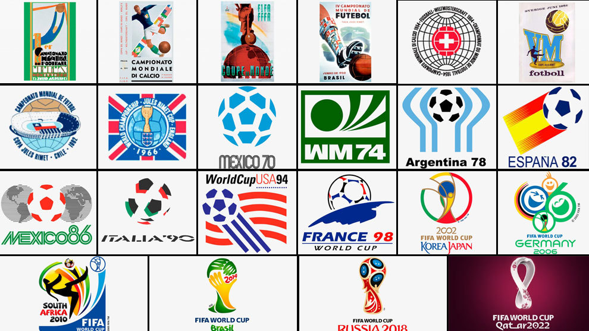

La Copa Mundial de la FIFA, también conocida como Copa Mundial de Fútbol, Copa del Mundo o simplemente Mundial, cuyo nombre original fue Campeonato Mundial de Fútbol, es el principal torneo internacional oficial de fútbol masculino a nivel de selecciones nacionales en el mundo.
Este evento deportivo se realiza cada cuatro años desde 1930, con la excepción de 1942 y 1946, en los que se suspendió respectivamente debido al desarrollo y las consecuencias de la Segunda Guerra Mundial. Cuenta con dos etapas principales: un proceso clasificatorio en el que participan en la actualidad cerca de 200 selecciones nacionales y una fase final realizada cada cuatro años en una sede definida con anticipación en la que participan 32 equipos (48 a partir de la edición de 2026) durante un periodo cercano a un mes. El balón oficial es fabricado por la compañía alemana de equipamiento deportivo Adidas.
La fase final del torneo es el evento deportivo de una sola disciplina más importante del mundo (la final de la Copa Mundial de Fútbol de 2002 fue vista por más de 1100 millones de personas) y el segundo más importante a nivel general después de los Juegos Olímpicos.
Ha sido realizada en 21 ocasiones, en las que ocho de los nueve países futbolizados —corresponden a las potencias mundiales y candidatos históricos— han alzado la copa: Brasil es el equipo más exitoso, con cinco victorias; Alemania e Italia le siguen con cuatro trofeos; Argentina, Francia y Uruguay la han ganado dos veces, en tanto Inglaterra y España se han titulado campeones una vez. El torneo presenta un dominio de los equipos europeos, que han ganado el título en doce ocasiones, mientras que los sudamericanos lo han hecho en nueve. Solo dos equipos de otras confederaciones han llegado a semifinales: Estados Unidos en 1930 y Corea del Sur en 2002.